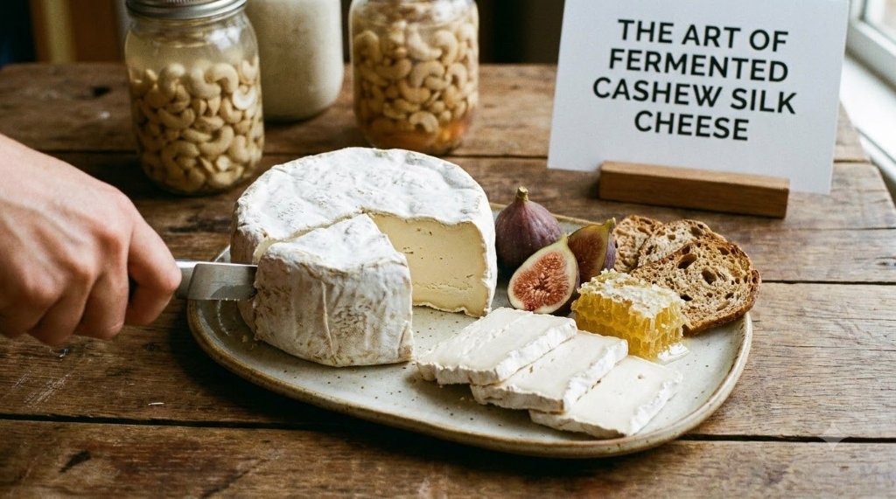
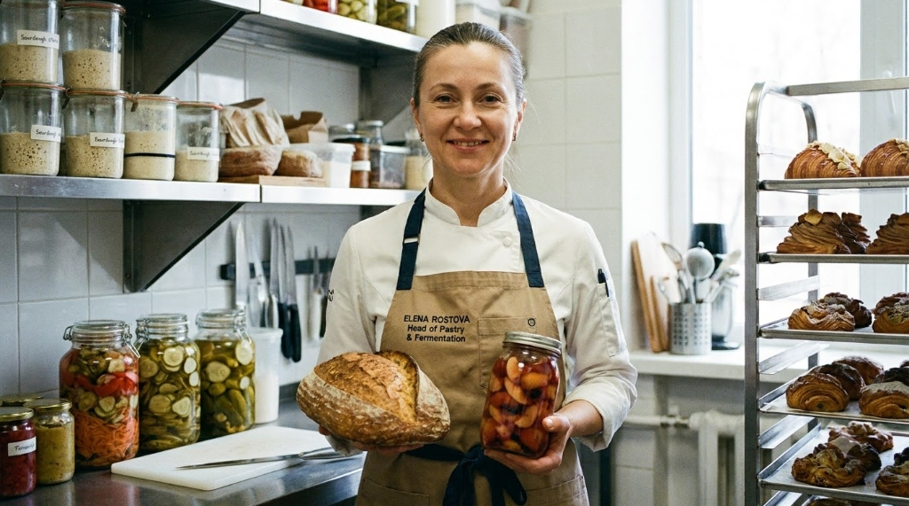
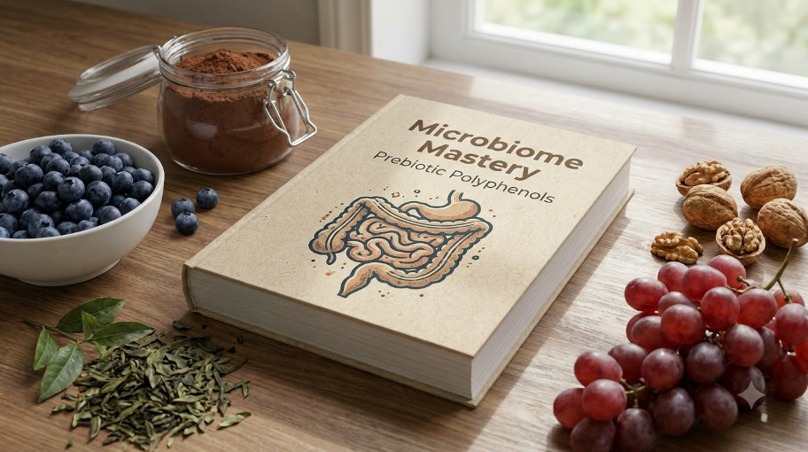
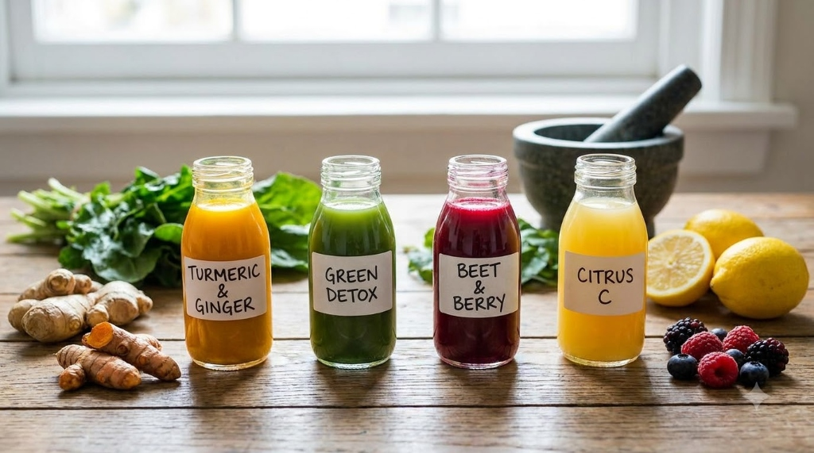
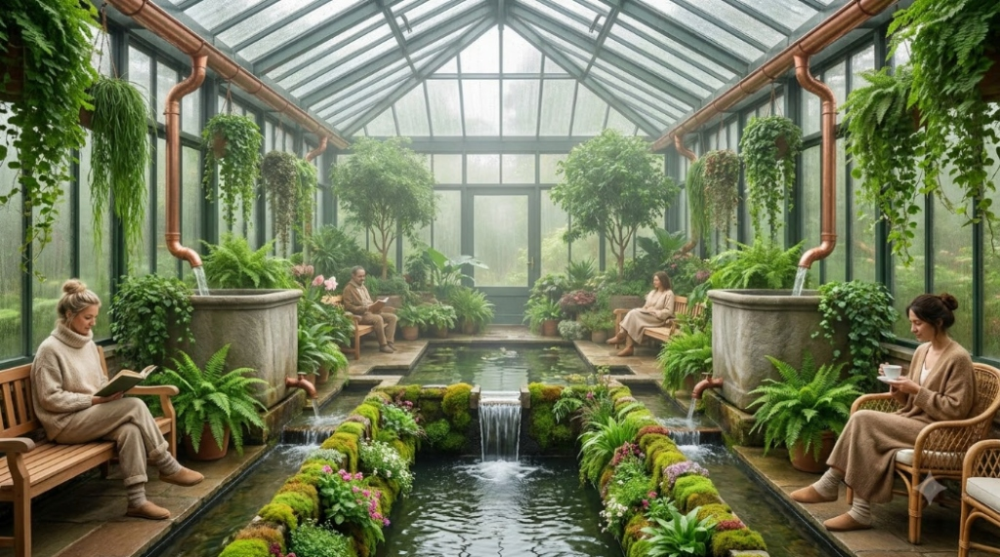
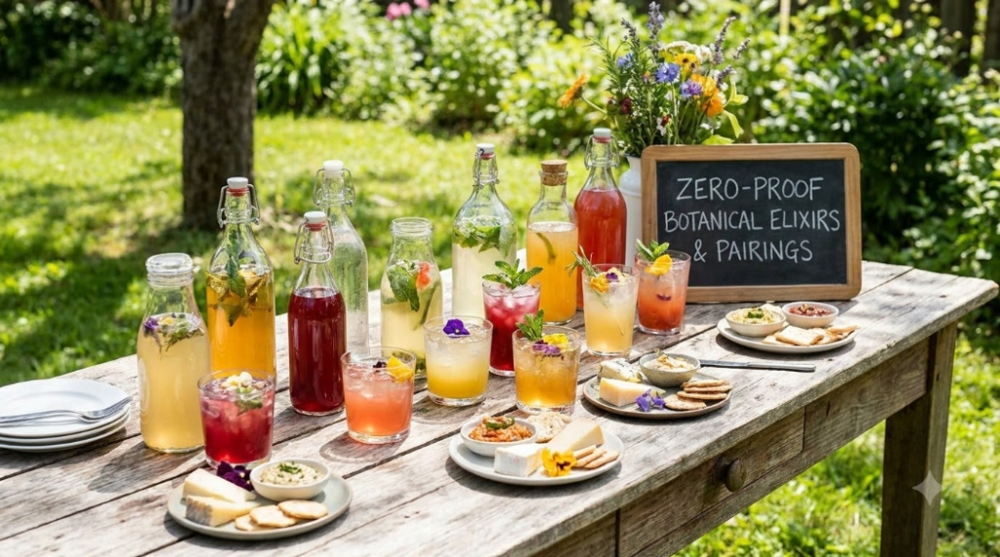
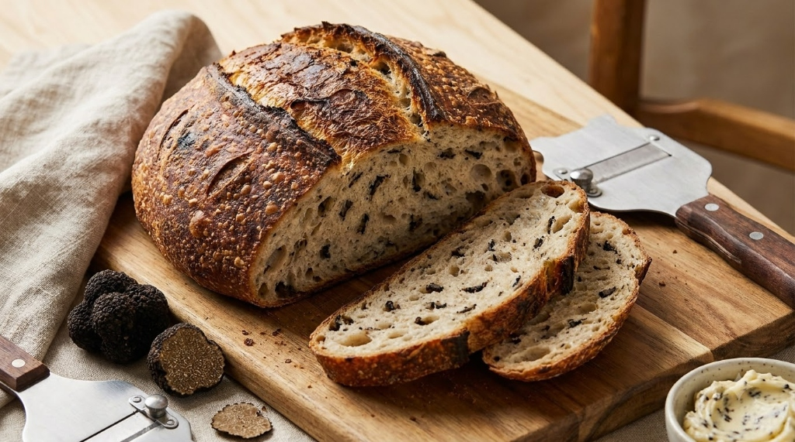
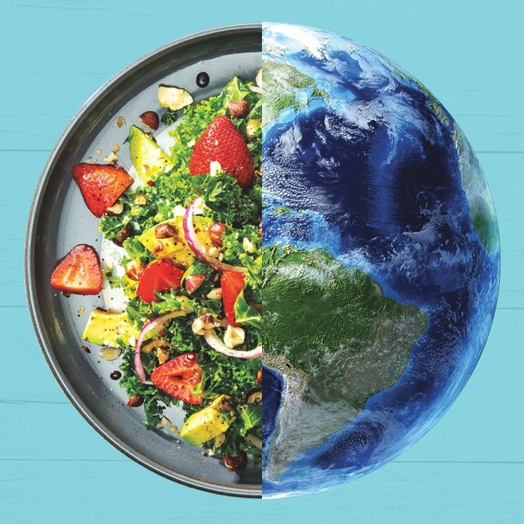

Fresh Ideas. Better Living.
Explore mindful plant gastronomy, holistic nutrition, seasonal foraging, and sustainable living practices from our kitchen to your table.

Featured ArticleThe Art of Fermented Cashew Silk Cheese
Explore how live active cultures and cold-pressed lactic fermentation transform raw organic cashews into artisanal cave-ripened cheese.

The Art of Fermented Cashew Silk Cheese
Explore how live active cultures and cold-pressed lactic fermentation transform raw organic cashews into artisanal cave-ripened cheese.
 VEGAN
VEGAN
Spring Foraging in the Oregon Coastal Range
A deep dive into identifying edible wild chanterelles, fiddlehead ferns, and wood sorrel harvested sustainably for our menu.
 VEGAN
VEGAN
Heritage Ancient Grains: Einkorn & Spelt Mastery
Why stone-milled ancestral grains offer superior bio-availability, richer crumb structure, and deep botanical complexity.
 NUTRITION
NUTRITION
Living Chlorophyll & Adaptogenic Tonics
Why we integrate cold-pressed spirulina, holy basil, and medicinal reishi into our daily zero-proof beverage pairings.

NUTRITIONMicrobiome Mastery: Prebiotic Polyphenols
Unlocking cellular longevity pathways through purple heirloom roots, mountain berries, and gut-strengthening antioxidants.

NUTRITIONAnti-Inflammatory Cold-Pressed Elixirs
Clinical culinary insights on extracting curcumin, gingerol, and fresh rosemary phytonutrients at gentle, unheated temperatures.
 SUSTAINABILITY
SUSTAINABILITY
Biodynamic Soil Stewardship in Willamette Valley
How our partner micro-farms practice regenerative agriculture, microbial inoculation, and closed-loop composting.
 SUSTAINABILITY
SUSTAINABILITY
Zero-Waste Kitchen: Closed-Loop Alchemy
Transforming botanical peelings, herb stems, and spent grains into umami-rich amino misos, vinegars, and savory finishing dusts.

SUSTAINABILITYRainwater Harvesting & Biophilic Sanctuary
How our rooftop living biophilic circuits and botanical rainwater reclamation nourish microgreens and edible flowers year-round.
 RECIPES
RECIPES
Artisanal Plant Charcuterie & Cultured Koji
Harnessing Aspergillus oryzae on heritage grains and legumes to develop cured plant-based pastrami and enzymatic cuts.

RECIPESZero-Proof Botanical Elixirs & Pairings
Crafting non-alcoholic vintage pairings utilizing oak barrel fermented kombuchas and cold-smoked herbal teas.

RECIPESSlow-Fermented Black Truffle Sourdough
Master our signature 72-hour levain schedule infused with wild Oregon white truffle oil and Netarts Bay flaky sea salt.

Good Food. Good Earth. Good Living.
At Green Haven, dining is more than sustenance — it is a conscious dialogue with the earth. We reject shortcuts, artificial additives, and industrial farming in favor of regenerative practices that honor biodiversity and pure vitality.
Every vegetable, grain, and botanical herb on your plate is cultivated through direct partnerships with independent local growers across the Willamette and Hood River Valleys, transforming nature's seasonal harvest into an artful culinary sanctuary.
Discover Our Story